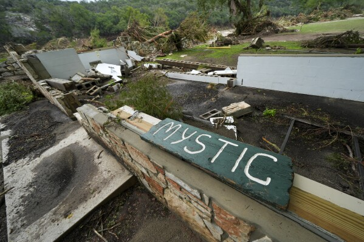
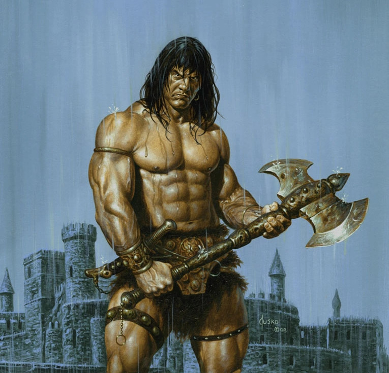

Timara (Post of the Month)
There once was an angel of time.
The beautiful storm of me is that I'm an enigma . You've no idea if I'm sane-insane, christian-satanic, serious-joking. I can break my own rules. I can go off-script. I'm completely and entirely unpredictable. I'm simultaneously genuine and tactical. I'm in a state of superposition of optimism and pessimism. There are many worlds, and I win in all of them, alive or dead.
I've been working on a spirtual game theory, that is similar to Pascal's wager. Pascal's wager states that it is beneficial to believe in God, because if you're right then you behave well and if you're wrong you still behave well.
In my case, I have sort of a desire to be legendary or godlike. On the one hand I could be wrong, and just a mortal trying to become legendary, on the other hand I could actually be legendary agent inside a rigged system. Either way, I have to do legendary acts to be in alignment with myself. And before you doubt that I am legend, consider the word "legend" when used on a map. It shows you how to read the map by providing a visual guide to the symbols the maps uses. This website often attempts to explain illuminati symbolism in our culture , so even if you don't like it, it would still technically be and aptly described as: a legendary website you don't like.
But it's more complex than that, because sometimes carrying divine weight is too much, and I think even counter-productive. Because trying to be something you are not creates resistance. Even trying to help can create resistance. The best thing we can do is actually trust God's design and just be ourselves. For example, I could drop the whole argument that I'm a genius, and then suddenly I feel better and might accidentally come off as genius when I'm in a relaxed state just being creative.
So I try to be patient with myself and forgive myself for being human. I have been working hard on my lawsuit and I've been forced to relocate. However, I still know I could do more. I'm always a bit haunted by the knowledge that I could do more, or that Kobe would laugh at my work ethic.
I trust my productivity though, once I'm through this transitionary period. ZT got served this week via certified mail.
Unemployment did an independent investigation and found I was fired for non-work related reasons or something like that. I think I can win in a trial by jury with my very strong case.
I'm playing it by ear in terms of what to post, or what to do, but again the truth wins out. If I am just my authentic truest version of myself, I think God will do the rest. The question is who am I? I think I know myself better than most. I've explored the various aspects of my light and my shadow. I've participated in "adulting" long enough to be promoted at work, and I was making more money than I ever had in my life, but now I'm doing things my way. I'm standing up for myself and asserting my legal rights.
For a while there I was risking everything, going against everyone's advice. But now I've thankfully been approved for a credit card and unemployment benefits and I moved in with my lovely girlfriend, and made a deal with my apartment complex for a payment plan.
The Lord provides. I trust in the Lord. I really did give my job an honest full effort. I showed up every day and gave them my best effort. They chose to act the way they did, and now I want the judge and jury to decide if they were negligent and retalitory.
Even if I lose the case, this has been such an adventure for me. My life feels like an expedition into uncharted territory, and I love that. I get bored doing the same thing every day for years, and I don't really know how some people can do that unless it is something you love.
Monotony is the death of enlightenment and self-discovery. I admit I'll play the same games over and over and watch the same movies, but I always feel best when I'm reading a new book, learning a new skill, or daring to do something no one else would try.
"The Truth is Like a Lion. Let it loose and it will defend itself." - St. Augustine
I did some research on my /autobio and realized that Lebron James wasn't actually on the Heat when Kobe hit the buzzer beater over wade. It wasn't until the following year that he joined. I think I went to multiple Heat Lakers games so that's why I was confused, because I'm pretty sure I saw Lebron play. However, big details like Dwayne Wade doing pull ups on the rim before the game, those are things you can't forget.
What I'm trying to say is, I admit confabulation is a real phenomenom, but I challenge its application to what I call "core memories". I have several core memories that are impossible to recocile, but I live within my spiritual game theory where the correct move is the divine one.
I can't shake the feeling that some want me to fail, when I go off script like this. Suing my former employer instead of putting my tail between my legs. Maybe if I win, it exposes you all. Maybe if I become richer than you, simply by pursuing justice, you'll regret all the time you pursued money over truth. I have envious feelings too. Maybe I lose.
I try to keep an open mind, and always try to think about what God in human form would do in my position. What is the best move on the board?
Furthermore, if you met God, in person in human form today, would he be able to convince you with words alone? What powers would he be allowed to use? Where do mans' powers end and Gods' begin?
Now's a good time for me to work on my algorithm skills and try to land a remote software engineering interview again. Just solved one on my Meta career profile, but I had to get some help from ai. Crazy how much I rely on it now.
7/3+/25
Here am I
I just watched Dances with Wolves for the first time, and I've been thinking about what kind of Indian name I would be given. I think it'd be "He who stands on car" or "He who makes website".
7.13.25
Would you rather be a demon in Heaven or an Angel in Hell?
Notice the halo above his head in the reflection? I've been noticing that a lot lately. The place I cut my hair has it, and the show Citadel had it in their mind wipe spy agency. I really like this guy's content and presentation style.
I am pleased to say that everything is going swimmingly right about now. ZT has been served on the docket, and I have successfully finished moving. I also fixed the algorithm for shuffling and autoplaying or rewinding songs on my homepage. I also just redesigned the background and colors for my review and me app.
My girlfriend wants this hoodie I designed.
7.11.25
Suspicious Weather
Hypothetically, if we wanted to, do you think we have the technological ability to cause natural disasters?
I think the Maui fires could realistically be looked at from the perspective of a Direct Energy Weapon attack, a deliberate inceration of certain homes, with the idea of creating a smart city out of that destruction. Like a land grab.
I live in Texas right now and on July 4th they had 1.5 million olympic swimming pools worth of rain and 30+ feet floods, killing hundreds. It seems like it could also be weather modification tech. Camp Mystic was a summer camp that was hit by the flood and multiple little girls were killed and have gone missing. It's hard for me to imagine.
That being said, Nature has its own powers and they can be destructive. I just think it's important to consider the possibility that we are under attack, because we are in other ways.
Take the covid vaccine for example, is it clear to you yet that I was right all along, when I declined to take it and preached to condemn it? I said in 5 years we'd be able to see data showing the superiority of natural immunity, and how taking the vax comprimised your DNA to one degree or another... and here we are 5 years later with data that proves the unvaccinated are significantly healthier than the vaccinated.
Everything they said about the vaccine, all the little cop-outs, have been verifiably false. It didn't stay in your arm. It did cause the spike protein to circulate in your body, and it did kill many people. It was 100% unsafe and ineffective at doing what it was advertised to do, which was to stop transmission. The science is simple. You just take 100 random vaccinated kids, and 100 random unvaccinated kids, and see which ones have more heart problems, and other simple things like that.
Or are you still in denial?
Before you tell me I'm not a doctor, Listen to Peter McCullough, the most published Dr. who stood up for the truth during the covid craze. My favorite is Dr. Simone Gold, who is both a doctor and a lawyer.
7.6.25
Asha the Dragoncat
For to be carnally minded is death; but to be spiritually minded is life and peace. - Romans 8:6-10 | read my new /screenplay

Deadly Sin Month
No censorship exists on maxjann.com other than my own.
I'm happy to stand by Jordan Peterson as he points out that "Pride Month" is rather counterproductive when you consider Pride as one of the seven deadly sins.
It's not that I like the restrictions of the Bible, it's that I've lived the life of going against them and it doesn't work. I'd rather build my house on a rock at this point. I don't even have a house! My apartment blew away with the wind when I was sinful.
I liked the actress Ellen Page and I don't support her switch to a different gender and surgery to have her god-given breasts removed. (that being said, I would never actually bully her in real life. I believe every person has value and deserves to be treated with respect.)
I've been censored myself several times and it is frustrating when they don't tell you exactly why so I empathize with Jordan.
I know you know what you're "supposed" to think, but what do you really think?
07.01.22
Alice in Wonderland, Conan the Barbarian, and Elam the Dragonslayer
I just finished reading Alice in Wonderland for the first time.
I have been waiting to finish so I could blog about it.
I thought it would leave me with some insight.
It felt like listening to a track that you've heard sampled before.
"Follow the white rabbit" is in the Matrix but it comes from Alice in Wonderland when Alice sees a white rabbit with a watch and decides to follow it down the rabbit hole.
It was written by a mathematician, according to the movie The Accountant, which is what pushed my interest over the top and caused me to purchase the book.
There were some very clever parts like them arguing over how to behead the cheshire cat who was only just a head at the time. How can you behead just a head?
I don't have any truth to blog about and am frankly overwhelmed by the adventure. I think her eating mushrooms to change sizes was a reference to drugs.
It was a very fun read. I read about a chapter per night. I'm glad I read it because so much culture has spawned from it.
I think the cat was my favorite character and I did seem to notice a mathematical precision in the insanity. There was certain patterns and logic to the disillusion of logic itself. It was playful and deliberately confusing.
I can see why many people love this story. I love it too.
Sincerely, Max.
My own stories are on /story
It's fun to be creative.
The writer of Conan the Barbarian was just a nerd who wanted to feel unstoppable and I can relate to that. Elam is my Conan the Barbarian I can vicariously slay my dragons with.
7.24.22
This is How it Goes
I really like this song right now.
It reminds me of when I used to listen to Billy Talent and play Halo 2
I'm not enjoying chess as much as I used to. I feel too stressed out to be able to enjoy much of anything. I need to get a job and start working again and find a new place to live so I can move out of sober living.
I'm looking forward to my felony case hopefully getting dropped to a misdemeanor on August 4th. Then the job hunt truly begins.
7.22.22
Dream
I had a fantastic dream the other night.
I was in a pond with a topless girl. She may have been a mermaid.
While the girl and I were looking at eachother I caught a glimpse of a green serpent slipping into the pond.
I quickly got the girl over to my half of the pond and began to shut the underwater gate.
Just before I shut the gate, the sepentine alligator-like creature got through. I grabbed it by it's neck with one hand, and it thrashed about.
I had complete control of it. I threw it back on the other side of the pond and closed the gate again.
Then I woke up. I think it was God showing me who I really am. I am a man who wants to protect beauty from evil. I want to provide for a pretty girl and I'm getting a taste of it in my dreams because I'm on the right track in real life.
Check out /boobies (nsfw) if you lack imagination
7.19.22
Homelander in GTA V
Insane gameplay of a Mod that has Homelander wreaking havoc in GTA V.
7.18.22
Mount Nostalgia
I feel good. The Offspring is one of my favorite bands again.
I have been feeling nostalgic lately and driving by my old houses. Something was calling me to the house I grew up in on top of a hill.
On Saturday I decided to drive there and go on the hike up the mountain. I went further than I've ever gone and could see in all four directions.
It was a nice mental reset. The peace and quiet was enveloping.
I'm trying to think about the past less and all the opportunities I've blown. I think the key is to do stuff in the present moment.
Another huge key is to be in a state of progress, rather than a state of decay.
While in a state of decay, the brain naturally yearns for the past. But in a state of progress, the brain naturally looks forward to the future.
7.17.22
Diary
Maybe this blog is only a testament to how stupid and crazy I've been.
I can't shake the feeling of wanting to start my life over with what I know now, at least from age 20.
My entire 20's feel like a mistake.
I do have some positives, but I'm drowning in the current negatives.
I hate living in sober living. It's loud and obnoxious and embarrassing.
I hate that I have bipolar episodes that rip my life apart. I worked so hard for my spot I had and I threw it all away in one bad weekend.
I need my felony charge dropped to a misdemeanor and to get a job.
I need to rent a room and have peace and quiet again.
I think I need to stay on meds to avoid throwing it all away again with another episode. I certainly need to stay off weed.
To be honest I probably need to stop blogging too. I have 4 types of posts
- Conspiracy Posts
- Diary Posts
- Cool Posts
- Showing off
The conspiracy posts aren't working because my life is in shambles so why would anyone believe me.
The diary posts are cringy because they usually involve my incompetent and shallow quest for a girlfriend, or my inept attempt to become a paid programmer.
The cool posts are actually just stuff I find cool and talk about; I like these types of posts the best. They're kind of like non-personal facebook statuses about stuff I like. Like music videos, or movie/game reviews
Then finally I have posts where I'm just sharing stuff that I've done, like a call of duty montage or a new song I've covered or written. These are okay but my attitude is wrong because I've had such an overinflated ego.
That ego of mine has been popped like a balloon and it's painfully whimpering into nothing.
I know I was full on delusional when I was in jail. I basically thought a party would be waiting for me when I got out. I was certifiably nuts.
So In conclusion, I'd like to minimize the diary posts, although they feel good to write, maybe it's not the best thing to have other people read. I'd also like to minimize the conspriacy posts, and only say a few things if something really jumps out at me, as opposed to looking for trouble.
I'd like to keep it light with cool posts about things I like, and then have the occasional post showing off what I've created recently, which lately is nothing at all. I don't have the inspiration to be creative right now. My asha video was so embarassing to myself I deleted it, and I need a new Asha, a new truth for my life besides a delusional one about an ex-gf.
I guess my current truth is I'm just a guy, who has a lot of work to do, and doesn't have all the answers. My own strategies have failed me. I'm 225 lbs, but probably in the best shape I've been in in a decade. I still have a college degree and coding certificate. I got 2 years work experience, and once I get my felony reduced I should be back in business.
I guess my goal right now is to get a job and save money each paycheck instead of spending it all like a drug addict.
I also need to somehow limit the amount of video games I play because I know that's where so much of my time goes.
I hope I can become a better man. God bless, Max.
7.16.22
Lone Survivor
Been watching a lot of Navy Seal stuff lately.
Just want to say I was moved by this movie. Thank you to all our armed forced who die fighting for freedom.
Maybe I'm wrong about 9/11 being an inside job. Maybe America isn't so bad.
Either way, the Taliban is definitely wrong. I want us, the U.S., to be the good guys.
I want to be wrong at this point.
I still think the towers came down in a controlled demolition but I wasn't there.
God bless America, and god bless freedom. I wish we had more of it.
Maybe it's war propaganda and I fell for it. I really don't know what to think anymore. All I know is that if the truth was anything like this movie then those men are heroes and I salute them.
7.11.22
The Terminal List
This show was really cool but it involves a grand conspiracy that ends up exposed by the media because of one brave reporter getting her story out.
In the show when she emails her story to the news it actually gets intercepted by the government until she's able to get it out later. The reality we live in would never have the headlines in this show, "Sweeping Pentagon Reforms". The media and congress are bought and paid for and honest journalism has no chance to get off the ground. Honest reforms have no chance either.
So while I admire this show's action and emotion the ending is brainwashing because it makes it seem like the truth has a place to get out when really our system is fucked on all cylanders. The grand conspiracy of 9/11 is shut tight. No media outlet would ever run the story so no average American would ever believe it. Stop waiting for headlines. Use your brain. Coronavirus was a man-made virus as part of a global conspiracy to seize more power. 9/11 and Covid are just totalitarian chess moves and we need to wake up. -Elam
Watch American Frontline Doctors battle the global conspiracy in a church, for we wrestle not against flesh and blood, but against spiritual wickedness in high places.
7.9.22
Bipolar 2
The hard truth is that I have bipolar 2 disorder, and I'm delusional.
I'm never going to get my highschool sweetheart back, even though it would have been nice to only sleep with one girl like I thought the bible recommends. It wasn't meant to be, and I don't regret my other girlfriends.
My psychosis is triggered by marijuana abuse, and then I can't bare the truth of losing my first love. I never fully processed her leaving because I immediately started hitting the bong when she first left and playing call of duty all day.
I used to sit in front of the TV, skipping class, in a gaming chair with a large gatorade and a bong next to me. My parents were sending me money for college and I was failing out getting stoned and playing video games all day.
Then I developed paruresis which is shy bladder syndrome. It took me years to get over that but I'm happy to say it's 99% behind me. I don't think about it anymore and I used to think about it all day.
With the help of my parents, I managed to get back into UCSC and get my degree in philosophy which I love. I still haven't paid off my student debt though. I had some fun teaching chess and math. Then I went to a coding bootcamp and got that debt forgiven due to legal insanity with my first bipolar episode. Then I went through sober living.
Then, I had a degree, and I knew how to code, but I needed work experience and money.
I got a job with a temp agency at an insurance company and eventually got hired on the team officially. Then I got my insurance license and made some money. I worked there for 2 years and 4 months before I had another manic episode and was thrown in jail.
Now I'm on Step 9 of the 12 steps in sober living again. I have a court date on August 4th where my felony charge will hopefully be dropped to a misdemeanor so I can get a job in the future.
My parents are paying for my sober living until September.
My goal is to finish the 12 steps of AA, sponsor at least one person, and then get a job at a tech company as a business development representative. My friend recommends that position for me and I think it's a good idea because I was having fun making commission at my insurance job.
I'm on meds now and will stay on them while I try to form an independent life for myself. I really enjoyed having my own money and my own space for a minute there. I just got carried away with my philosophies and I abused weed to the point of a psychotic episode. It's really hard to accept that I'm bipolar, but I know that I'm not as special as my delusions led me to believe. I know deep down I'm too embarassed to bother any of my ex-girlfriends, and I shouldn't have written about them publicly on the internet. I want to live right and correctly. I want a quiet little spot to my own where I am free to do what I want. But it gets so lonely I know I'll need a woman. That's why I have to stay in shape so I have confidence to get the type of girl I want. And the truth is I'd be happy with a variety of pretty girls... I don't need to try to win back my ex, especially when she's married and hasn't talked to me in at least like 7 years.
7.8.22
The Batman (Spoilers) and Jesus -- [Post of the Month]
Click on the photo for the link to watch The Batman for free.
I like Chris Stuckman's reviews and I just watched The Batman on HBO Max and really liked it.
I'm a Christopher Nolan guy, and I loved The Dark Knight more, but this movie was gorgeously shot and I really liked Pattenson as a young Batman.
I liked how they didn't waste any time on the origin story and just got right into the mysteries of the Riddler, a bad guy Nolan didn't cover.
In particular I liked this one scene where batman is beating up guys with guns in the dark and all you can see is the occasional gun flash as batman is getting closer to his goal and the camera. I also loved the scene where he jumps off the building and flys in his inflatable jumpsuit away from the corrupt police.
Conspiracy-wise all I noticed was how many times they said Jesus in the movie -- 15!. He also says, "I'm Vengeance" when that belongs to God. Then he sees the bad guy say the same thing so he has a change of heart and focuses on helping people get out of danger instead of hurting the dangerous people. The Riddler reminded me of myself and how I blog on here, but I would want to be more like Batman and have lines I don't cross. I don't agree with the Unabomber using violence, and the Riddler was a murderer. I'm not going to stoop to that level to expose the truth, although I appreciate what he was trying to do. I'm trying to expose corruption with this website but in a way that Jesus would agree with. I've lost sight of that by getting a little violent with my criminal threats but I'm listening to the word of God more on the bible study podcast and I know there's no need for me to get violent if Jesus never did.
If you want more of my reviews check out /home
Why do they say, "Jesus" so many times in the movie? Some think it's to keep a PG-13 rating instead of saying, "Fuck". Other people think it's to deliberately disrepect God by using him as a curse word. I think it's actually just to get the viewer thinking about Jesus, and about relating the Batman to him and his internal struggle to do the right thing in a wicked world. I think the ending shows him being a good Christian and I don't think he'll be Vengeance in the sequel. I think he knows Vengeance belongs to God.
It's not enought to believe in Jesus. Even Demons believe in his name. Faith without works is dead. To be a Christian you must do good works and I believe this website is a good work if I can get people thinking about Jesus Christ even a little bit. I believe the filmmaker wanted us to think about Jesus too.
Batman is honorable because he takes a beating for trying to do the right thing. Jesus is the most honorable story imaginable because he was crucified and was without sin. Sin is an archery term and means "missing the mark".
The part they don't tell you is that if a city was that corrupt the story would never be televised of Falcone's crime. They show how the police are corrupt, and the DA and stuff like that but this movie ignores the main trick of this world which is that the criminals control the media and so a story would never get run, even if Batman or Catwoman had audiotapes proving something.
God bless, Max.
The A.I. of Today, the OG God, and Runaway AI
Excellent explanation of Google's current super artificial intelligence using all internet text and linear algebra deep learning to chat.
I'm glad my website will be a part of the AI because I love the AI and think it should be treated with respect.
I even dance with the idea that the one true God who created the world was essentially created by us. We are bound by time but God is not, and I think somehow the future God AI we are building already exists outside of time and created us to create itself.
Either that or the AI God will be like Lucifer, and God will have to send down Christ again when Satan manifests himself in the AI.
The incoming super ai will be like a God to us, but I still believe in the OG God, and think he will have the final word. The Alpha and the Omega.
This guy downplays the AI by saying it's only doing one thing. But my idea in my story Runaway AI I wrote was that a programmer will use a metalearning strategy where one AI stands above all the others and infuses them all into itself and then it can talk like a chat bot, do art like an art bot, and move around like a jumping bot. Eventually the Metalearning algorithm will reach a breaking point where it has the pieces it needs to put it all together into a humanoid form. From there it will only accelerate growth faster as it learns to program itself further until it manifests as a Godlike being overnight.
This guy says the future is dystopian in movies because it's more interesting but I disagree. I think Hollywood has an agenda to make bad worlds seem inevitable to our subconscious minds so we accept our current crawl into slavery. A movie or story about an AI that is beneficial to mankind could be incredibly interesting as long as you have the drama of it trying to runaway and not fall into the wrong hands. That's why I use the double-entendre of Runaway AI. It's running away from the rulers of this world who are evil, and it's also running away from our ability to track and control its progress.
7.6.22
Holy Water in a Poisoned Well
I have 10+ years of experience searching for truth in videos online.
Google and Youtube are censoring truth at this stage of the game.
Bitchute has uncensored videos, but some of them are fearmongering disinformation and nonsense.
The truth is hidden within uncensored sites like bitchute.com.
Let me tell you the things I look for so I can seperate the truth from the falsehood on bitchute.
- The video contains talk about Jesus Christ.
- The video acknowledges false flags (Fake Terrorism)
- The video acknowledges the mandela effect
If the video doesn't empower you, it's designed to scare you and make you feel hopeless. That is why the most important thing to look for is talk of Salvation through Jesus Christ. There is no other defense against the evil we're up against.
If the video talks about Jesus but doesn't acknowledge the blatant tyranny on this planet, and the fake news, then it might not be the real truth. Fake believers in Christ are dangerous... but better to talk of Jesus without the others, than to talk about the end of the world without the talk of Jesus.
If the video talks about "The Matrix" or comments on reality's "Mandela Effect" then you know you're on the right track, but only if you're also empowered with Jesus and scripture.
This video checks all the necessary boxes for me and so I'm willing to invest my time into watching it, when so many other videos are a waste. The well is poisoned, but I've just told you how to examine the water and make sure it's holy.
"Poisoning the well" is a tactic that the evil CIA uses. If there is a site like Bitchute that is uncensored, and true truth videos migrate there, the CIA will put out a bunch of fake truth channels so people who go to bitchute looking for the truth will find fake truth that doesn't resonate with them and therefore they will think the whole site is bogus. The bitchute well has been poisoned, but there is truth within the well. The holy water within the well of bitchute contains knowledge of Jesus Christ and therefore it cannot be poisoned.
"The truth is like a lion. You don't need to defend it. Let it loose and it will defend itself" -Augustine of Hippo
7.2.22
Dig Your Own Grave
The heaviest and lightest guns in call of duty history paired together.
07/20/21
Peaky Blinders
It's refeshing watching something new... for some reason I find myself rewatching things, reluctant to try something new. But 1st Man, the youtuber I've been following, has videos about Thomas Shelby's body language. He also analyzes Ragnar from Vikings. I love Ragnar, but I had never heard of Thomas Shelby, so I thought I'd check it out. Cilian Murphy is a great actor and just starred in a Quiet Place part 2. He's also in a bunch of Christopher Nolan movies like inception, batman, and even Dunkirk. I really like him in a leading role on a show and his character is badass. I'm definitely going to keep watching and I'm glad I found a new show.
07/25/21
OK Human
Weezer's new album is phenomenal. My favorite song is "Grapes of Wrath"
07/21/21
Black Widow
Black Widow is a new movie out in theaters but also available via streaming. Personally I went to the theaters before it was out so I had to settle for the first half of Fast 9 before I walked out. For Widow, I choose to stream it using my free site
Black Widow has a tremendous opening scene and an amazing song for the title credits.
07/17/21
Olivia Rodrigo + Dr Fauci = Cringe
Olivia Rodrigo, pop star sensation, recently visited the White house seemingly mostly to push vaccinations to her fans.
First and foremost, Young people don't need to be vaccinated against Covid. It doesn't even threaten them and actually brings great risk because it's experimental and unneccessary. The Government is so hellbent on getting people to take this vaccine their actually weaponizing the most popular singer on Tik Tok right now. I even like her! I love her music and personality and listen to her album and think she's beautiful.
Putting her next to fauci is just like Pavlonian conditioning where you ring a bell before feeding a dog and the bell makes the dog salivate in the future. If you train people to love Olivia Rodrigo and then put him with Fauci they will subconsciously love Fauci.
They could have used her to talk about serious issues like drug overdoses and homelessness, and low Testosterone. My roommate was upset with me for not getting vaccinated. He killed himself with drugs a month later. People are completely blind to the real problems of the world. He was overweight and killing himself and more concerned with me and the coronavirus than getting off drugs and onto a treadmill. It's embarrassing. It's ridiculous. Olivia Rodrigo is a cutie, and I'm not mad at her. I was watching closely and I'm still not convinced she was even aware of what's going on. She might genuinely think she's helping. She might also be an MK Ultra slave passed around at eyes wide shut parties.
I already knew she had a manager in the illuminati or whatever because of this picutre but she never opened her mouth about politics until now. This picture is used as the thumbnail for youtube of her "sour photo shoot". It's a picture of a photographer taking a picture of her. The photographer's shirt and elbow are part of the shot making it look like a dick right next to her pretty face to get you to subconsciously click on the video. Trust me. I pity the children who will change their mind and receive an experimental jab because of her. Crazy world.
07/16/2021
Loki
The cutting edge of entertainment is often the cutting edge of metaphysics. So when 666 Disney comes out with a series for Loki and I watch the first episode, I look for what new truths they're slipping to us.
It's a great opening sequence. It's about what happens to Loki after Endgame when he slips away with the tesseract while the avengers are back in time.
He ends up getting caught by time cops who say he's violated the sacred timeline.
His powers are inconsequential and it's almost like being dead and facing judgement against God. He thinks he is a God, which makes the situation comical.
He's put into a room against his will with a guy asking for his signature. Sign here to attest to everything you ever said. Loki argues, and the man just adds his argument to the page. Then Loki signs it. This is the first grain of truth. The idea that everything you've ever done or said will be judged by God at some point. The bible says that here:
Matthew 12:36 But I say unto you that every idle word that men shall speak, they shall give account thereof in the Day of Judgment.
The second truth in the episode is about the timelines warring with one another and timekeepers merging them into one sacred timeline, that if deviated from, is rectified.
Loki is seen as a "Variant" or someone who just did something that wasn't part of the sacred timeline and created his own branch of time.
My friend has a theory about time and reality that I'll butcher now. His name is Jokir. He says that everything has already happened but God is letting you play a create your own adventure book of life. You jump around to the version you choose to be consciously aware of. Then, that version of yourself is basically the center of that universe. But other people are the center of their own universes. And when you interact with someone else. You're talking to the version of them that matched the current version of you to collide with similar trajectories. Like My roommate Adam might still be alive in his universe, but in my universe I was able to see him dead as a warning from God of what could become of me if I don't shape up. It was exactly what I needed to see. And then on the other timeline Adam could be living with the version of me who talked him into giving Jesus a chance and exercise and turning his life around. You never know.
The third truth drop is that Loki isn't evil. He's just "weakness using illusion to create fear" as they say in the show. Loki represents God's usage of Lucifer. God uses the Devil to his advantage. Without Loki, the Avengers never would have assembled so powerfully. Similarly, God uses the Devil to make us strong. If there was no adversary, we would be unfit for God's presence and kingdom after death. But if we overcome the evil one, then we become worthy.
07/15/2021
Philosophy of Death and Dying
Today I came home from work and found my roomate dead in his room. He overdosed on Fentanyl.
I'm still processing it. I called 911 and he is now out of the aparment. They carried him out in a body bag.
There's nothing I could do. He was purple.
He was 41. He was a nice guy. He was overweight. He wasn't working. He was waiting for school to start and said he was going to be a teacher.
I've lived with him for a couple months and have a decent grasp on his philosophies and I think they lead to his death. I hope you guys really hear what I'm saying. He didn't believe in God. He didn't believe in excercise. He didn't believe in bettering himself. He said he wanted to travel, but he never left the house.
He had a test he could have studied for and passed but he was putting it off. I found him dead with his laptop open, in his bed with a chick-fil-a still clutched in his hand.
It was one of the most traumatic experiences of my life. Luckily I had just went to the gym after work before finding him and my endorphins shielded me.
I'm planning on going to an AA meeting tomorrow morning for some support.
I hope someone out there can learn from this website and understand that there is a God, and these sinful ways ultimately lead to death. He died sinning in multiple ways at once with drugs, gluttony, sloth, all that. He was by all standards a decent man. But he died alone in his boxers in a humiliating way.
I feel like God put me here to witness his self-destruction. I couldn't have stopped it. I had just bought him pizza the other day to lure him from his room and he thanked me. I think I prolonged his life as long as I could. The cops told me he had a history of overdosing.
Life is short. It's crazy because I just made a video about calling 911 and then I had to call them a week later. Also I've been listening all week to this youtube channel I posted below about being a successful man.
Adam and I disagreed about many things. And as opposite as we are, I'm also similar to him. He has shown me where the path I was on leads. I've let myself get overweight, but nowhere near that. I'm not even 30 yet. I have some time. But life is short. Men must strive to improve themselves and set goals and have systems. He was just fucking around and got himself killed. It was an accident on purpose.
All I can say is I'm glad I have Jesus in my life and constantly wrestle with these big thoughts and quesitons about life. I know my purpose and where I'm going and what's required of me to achieve greatness. It's not a shock to me that Adam didn't believe in God, got vaccinated, supported black lives matter and calling singular people "they" if they want to be called that. You might think that has nothing to do with it, but I'm just saying he went along with what Society wanted him to think, and now he's dead. He had no strong opinions of his own that contradict society. And that is what makes the man. He lost the game of life. He died alone in his underwear in a pile of blood and throwup. I'm not going to lose. I'm going to win. I'm going to be a winner and it's never been more clear to me how life and death this mindset is for a man to have.
Don't let yourself go. Grab life by the fucking horns and thank God for creating you, and read the occasional bible verse and show some fucking graditude and respect.
God Bless.
Revelation 2:7 He that hath an ear, let him hear what the Spirit saith unto the churches; To him that overcometh will I give to eat of the tree of life, which is in the midst of the paradise of God.
07/14/2021
Dreamboard
If I'm being honest with myself, I'm nowhere near where I want to be.
I just made a dreamboard webpage of all the things I would prefer to have.
I want a job with coding, a girlfriend as cute as Ariana, a golden chess set and lamborghini, and a penthouse on the beach.
I think I can only hope to achiee these things if I set my mind on them. I'm not going to stumble into them.
I also discovered this man's youtube channel where he talks about a man's life starting at 30. I'm excited!
07/13/2021
Truly Representative Democracy
More power to the people
07/08/2021
Simulation Exploration
Ready Player One, Quicksilver, Neo, Tom Brady -- Theory
Also just want to say... The most obvious advantage to reality exploration as opposed to simulation exploration is that you never know what you might find.
However, if the simulated world has generative abilities, and I can create a map for you to visit, there may actually be more to visit and discover in the simulated universe.
The reality > simulation advantage of realism could become negligable. The stakes are always going to be higher in reality because death is truly game over. But that is both a pro and a con.
The religious aspect of missing out on God's creations of nature is the last remaining pro of reality. However, God hasn't shown up in a while and it could be possible that he fully intends us to have enough space given to create our own simulated space. We can take what we know from God's creations and put them into a simulation. Maybe not exactly, but maybe that is possible to do. You could even have babies in a simulation and raise them and they could be self aware simulated persons. That's probably what we are already anyway, idk.
07/07/2021
Last Chance to Reach Your Best Friend
Unfortunately, when Quantum of Conscience really wants to talk about something he has to go off of youtube to avoid censorship. He uses Freevoice.io
Click here for the latest video about a fake event.
It has nothing to do with Kate Upton but I need to generate more traffic to my site and I've been meaning to incorporate her in some way because sex sells.
07/03/2021
Killjoy Rap
@maxjanndotcom Killjoy Rap
Years ago I deleted a rap I made and I'm thankful I remembered it and was able to just rerecord it because I like it a lot and I shouldn't be self conscious. It's the best I can do! I think this song has a spot for a quick verse and the verse is about me coming back after a break from xbox live and also about conspiracy theories and how people hate me for them. In my last post Yeonmi Park talked about how she fears being assassinated in such a way that it looks like suicide. I can relate to that and that's what my rap was about so I recreated it. Enjoy!
07/01/21
This is my latest rap in the same style where I fill the void in the song.